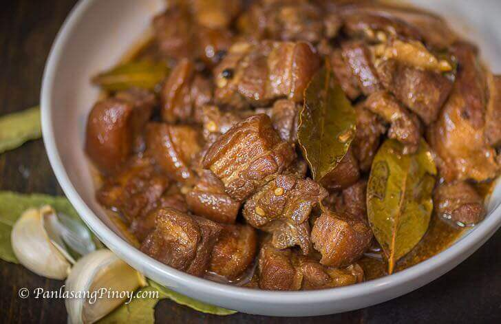

Pork Adobo, also called adobong baboy, is pork cooked in soy sauce, vinegar, garlic, bay leaves, and whole peppercorns. The word adobo comes from the Spanish word adobar, which means to marinate. The name came from Spain, but the cooking method was already in the Philippines long before that. Filipinos cooked meat with vinegar and salt because it helped preserve food in a hot climate.
Adobo is widely considered the unofficial national dish of the Philippines. It does not have an official government declaration, but it is one of the first dishes many Filipinos mention when talking about our food. The first written record goes back to 1613, where it was called adobo de los naturales. Every region has its own version. Some cooks add coconut milk (adobong baboy sa gata), some use turmeric (adobong dilaw), and some add mashed liver to the sauce.